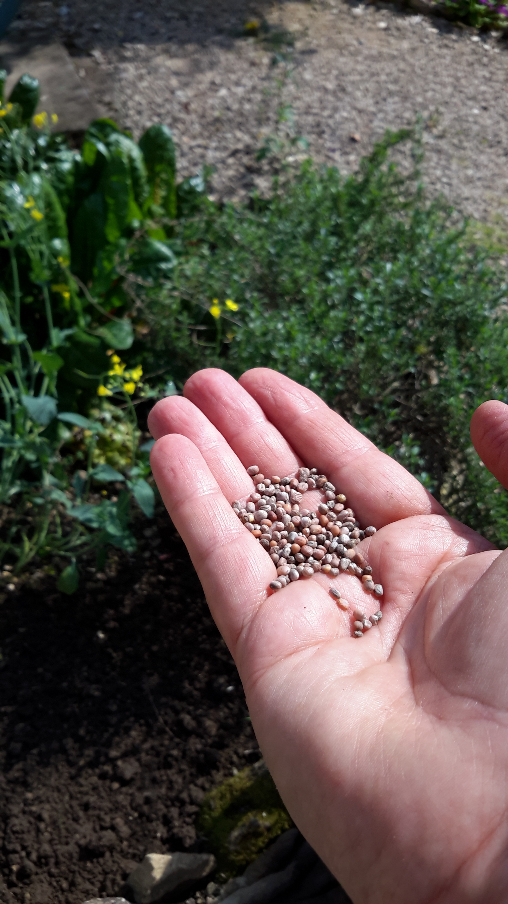

The Hunger of Those Who Built It
In this near-future tale of second-chance redemption set in Paris, two sisters—their relationship tested by a dark family secret— face off as they battle climate catastrophe in very different ways. Hunger is the story of Diane Griffiths, a sustainability visionary with blinders, who wants to feed the world; Helen, her clandestine sister, who wants to change it; Alain, Diane’s lover, an engineer of history with a Parisian pedigree and a secret Maghreb heritage; and Lou, Diane’s niece and Helen's daughter, a queer rebel and a keeper of hope.
Buy this novel
from the publisher
.
Order it from your favourite independent bookstore.
Or buy it
here
, if you must.
SHORT FICTION
“Stonework” in Interzone, “a wonderful window on an arcane universe” Paul J. Uitzi, TangentOnline.
“You’re memory” in Westerly.“The original fiction in this issue is a little disappointing, with “the notable exception of Wendy Waring’s bijou, ‘You’re memory’” Michael McGirr, Sydney Morning Herald.
MEDIA
Youtube video: Reading The Hunger of Those Who Built It for the ‘Edmonton in 2030’ Worldcon Bid Party
Podcast: Reading ‘Alien Tears’
The seeds of my work

The women in my life have inspired me: to believe in myself, to bear witness, to stand up.
The love of my life encouraged me to keep asking until I got the answer I needed.
My mother gave me her love of language. My father taught me to garden and to listen for song.
And my niece reminds me every day of the importance of keeping hope.